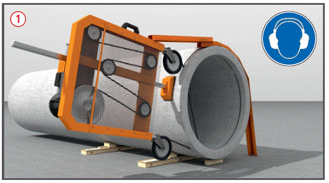
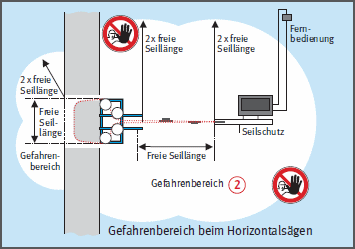
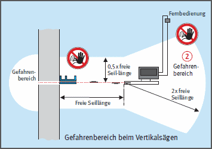
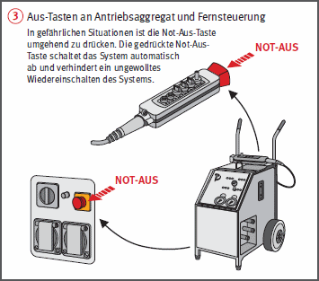

Gefährdungen
- Bei Diamantseilsägearbeiten können durch Seilriss, herumfliegende Diamantschneidesegmente, umstürzende oder herabfallende Abbruchteile, Nichtbenutzung der maschinengebundenen Schutzvorrichtungen Personen verletzt werden.
- Die Lärmbelastung kann zu Gehörschäden führen.
Allgemeines
- Die geeignete Diamantseilmaschine auswählen.
- Diamantsägeschnitte entsprechend der Abbruchanweisung festlegen.
- Statisches System und Lage der Bewehrung beachten.
- Vor Beginn der Arbeiten Arbeitsbereich auf Vorhandensein und Verlauf von Leitungen überprüfen.
Schutzmaßnahmen
- Bedienungs- und Betriebsanleitung der Maschinenhersteller beachten.
- Seilsägebedienung nur durch Beschäftigte mit einschlägigen Kenntnissen und entsprechender Einweisung und Unterweisung.
- Seilschutz an der Maschine immer entsprechend Herstellerangaben verwenden.
- Bei Arbeiten über Bodenhöhe geräumige und tragfähige Stand- und Aufstellflächen schaffen, ggf. Absturzsicherungen anbringen.
- Seilsägen und Hilfsmittel wie Führungsschienen, Umlenkrollen sicher befestigen. Ggf. Hilfsmittel, wie Hebezeuge oder Hebebühnen benutzen.
- Bei Arbeiten in umschlossenen Räumen ausschließlich Maschinen mit Elektro- oder Hydraulikantrieb verwenden. Vergiftungsgefahr durch Abgase!
- Beim Einfädeln des Seils in die Eckbohrungen darauf achten, dass das "Männchen" der Schraubverbindung in Laufrichtung vor dem Diamantröllchen liegt.
- Drehzahl der Antriebsmaschine entsprechend Herstellerangaben einstellen und einhalten.
- Nur mit Diamantseilschutz an der Maschine arbeiten
 .
.
- Funktion der Wasserfangeinrichtung regelmäßig überprüfen und das Wasser regelmäßig austauschen.
- Wasserlanzen-Umrichtungsarbeiten nur bei gesichertem Stillstand des Sägesystems durchführen.
- Gefahren- und Umgebungsbereich
 komplett absperren. Sicherstellen, dass sich in diesem Bereich keine Personen aufhalten. Ggf. freie Seillängen abdecken.
komplett absperren. Sicherstellen, dass sich in diesem Bereich keine Personen aufhalten. Ggf. freie Seillängen abdecken.
Zusätzliche Hinweise für Elektrische Arbeitsmittel
- Elektrisch betriebene Maschinen und Geräte nur über einen besonderen Anschlusspunkt mit Schutzmaßnahmen anschließen, z. B. Baustromverteiler mit RCD (FI-Schutzeinrichtung).
- Bei frequenzgesteuerten Betriebsmitteln sind besondere Maßnahmen, z. B. allstromsensitive RCD (FI-Schutzeinrichtung) erforderlich.
- Not-Aus-Schalter muss zugänglich und funktionsfähig sein. Bei Gefahr umgehende Betätigung des Not-Aus-Schalters
 .
.
Zusätzliche Hinweise für Diamanttrennseile
- Seile nicht auf bzw. um scharfe Kanten führen. Kanten vor dem Sägen auf mind. R = 10 cm abrunden.
- Achtung: Peitscheneffekt bei Seilriss, feste Schutzeinrichtungen, z. B. Schutzwand oder Abdeckung aus Holz anordnen.
- Die Steuerung muss aus sicherer Entfernung erfolgen. Sicherheitsabstände einhalten.
- Vor Schneidbeginn das Seil ohne Vorschubbewegung der Antriebsrolle leerlaufen lassen. Erst bei laufendem Seil Vorschubbewegung einleiten.
- Sägeverfahren in angemessenen Zeitabständen unterbrechen, um Sägespalt hinter dem schneidenden Seil kraftschlüssig aufzukeilen bzw. bei Mauertrockenlegung wieder zu verschließen.



Zusätzliche Hinweise zum Bewegen getrennter Bauteile
- Gefahrenbereiche, in die abgetrennte Teile fallen können, fest absperren oder durch Warnposten sichern.
- Abzutrennende Bauteile durch Unterstützung, Aufhängung oder Abspannung sichern.
- Sicherer Ausbau der getrennten Bauteile, z. B. mittels Sicherungs- und Aufhänge- oder Kranvorrichtungen.
- Sicherer Abtransport der getrennten Bauteile durch Hebezeuge bzw. Transportmittel.
- Aufenthaltsverbot unter schwebenden Lasten und im Bereich ungesicherter Bauteile.
Prüfungen
- Art, Umfang und Fristen erforderlicher Prüfungen festlegen (Gefährdungsbeurteilung) und einhalten, z. B.:
- vor Beginn jeder Arbeitsschicht auf augenfällige Mängel durch den Bediener,
- vor der ersten Inbetriebnahme und nach Bedarf, mind. 1 x jährlich durch eine "zur Prüfung befähigte Person" (z. B. Sachkundiger).
- Ergebnisse dokumentieren.
- Werkzeuge vor Arbeitsbeginn überprüfen. Fehlerhafte Diamantseile, z. B. mit abgefahrenen Diamantröllchen aussondern.
- Verschlüsse regelmäßig auf Abnutzung kontrollieren.
Arbeitsmedizinische Vorsorge
- Arbeitsmedizinische Vorsorge nach Ergebnis der Gefährdungsbeurteilung veranlassen (Pflichtvorsorge) oder anbieten (Angebotsvorsorge). Hierzu Beratung durch den Betriebsarzt.
07/2019